- Ana Sayfa
- Hizmetler
Hizmetlerimiz
Ana uzmanlığımız endüstriyel ısıtma sistemleridir. İklimlendirme, tesisat ve kaynaklı imalat kabiliyetlerimiz bu sistemlerin uygulamasını tek elden yürütmemizi sağlar.
01 · Faaliyet alanı
Endüstriyel Isıtma Sistemleri
Üretim tesisleri, depolar ve yüksek tavanlı hacimler için merkezi kazan sistemleri, proses ısıtma hatları ve doğalgazlı radyant ısıtma uygulamaları.
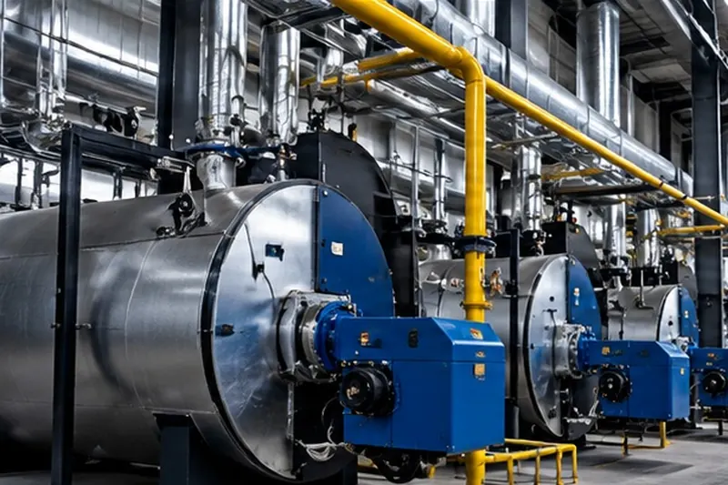
Endüstriyel ısıtma ve soğutma teknolojileri
Merkezi kazan daireleri, buhar ve kızgın yağ hatları, proses ısıtma ve soğutma devreleri.
Hizmet ayrıntıları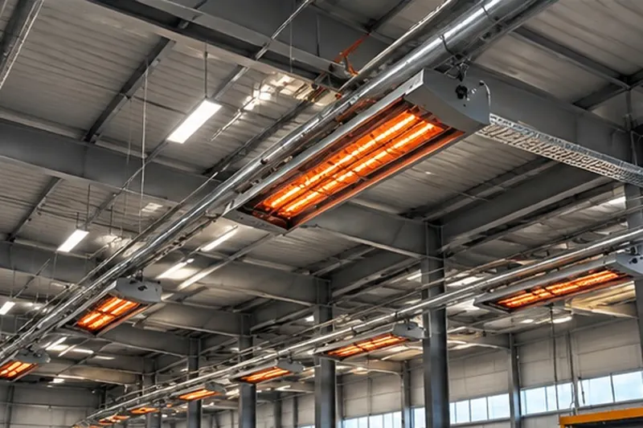
Doğalgazlı radyant ısıtma sistemleri
Fabrika, depo ve atölye gibi yüksek tavanlı hacimlerde çalışma alanını doğrudan ısıtan sistemler.
Hizmet ayrıntıları02 · Faaliyet alanı
İklimlendirme ve Enerji Uygulamaları
Isıtma, soğutma ve havalandırma tesisatında ihtiyaç analizinden devreye almaya kadar uygulama; mevcut sistemlerde enerji tüketimini azaltan iyileştirmeler.
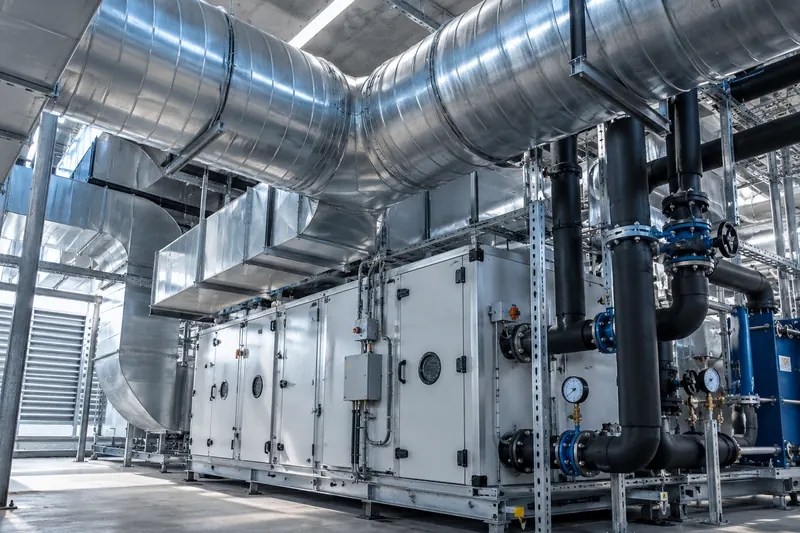
İklimlendirme ve enerji proje uygulamaları
İşletmelerin ısıtma, soğutma ve havalandırma ihtiyacına yönelik tesisat uygulamaları; hava kanalı ve taşıyıcı imalatı, cihaz montajı ve enerji verimliliği iyileştirmeleri.
- Havalandırma ve iklimlendirme tesisatı
- Galvaniz ve paslanmaz hava kanalı imalatı
- Klima santrali, fan coil ve chiller montajı
- Isıtma ve soğutma boru tesisatı
- Cihaz taşıyıcı şase ve platformları
- Enerji verimliliği iyileştirmeleri
03 · Faaliyet alanı
Endüstriyel Tesisat ve Borulama
Isıtma ve soğutma hatlarının, proses borularının ve çift cidarlı (ceketli) hatların atölyede ön imalatı ve sahada montajı.
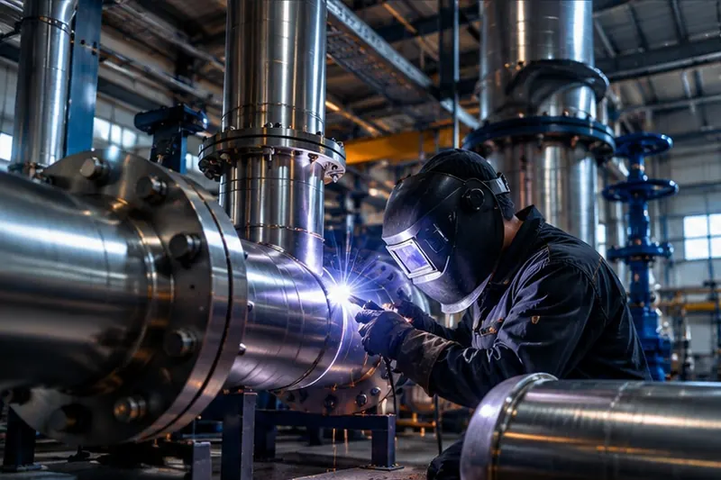
Boru ve cidarlı boru kaynağı
Paslanmaz ve karbon çelik proses ve tesisat borularında kaynaklı imalat ve montaj; ısıtma ve soğutma uygulamaları için çift cidarlı (ceketli) boru ve kaplar.
- Proses ve tesisat borusu kaynağı
- Çift cidarlı (ceketli) boru imalatı
- Isıtma ve soğutma ceketli kaplar
- Flanş, dirsek ve te bağlantıları
- Sahada boru hattı montajı
- Sızdırmazlık ve basınç testine hazırlık
04 · Faaliyet alanı
Kaynak Teknolojileri ve Özel İmalat
Tesisat işlerini destekleyen kaynaklı imalat kabiliyeti: paslanmaz, alüminyum ve karbon çelikte TIG ve MIG/MAG kaynağı, konstrüksiyon ve ölçüye özel imalat.
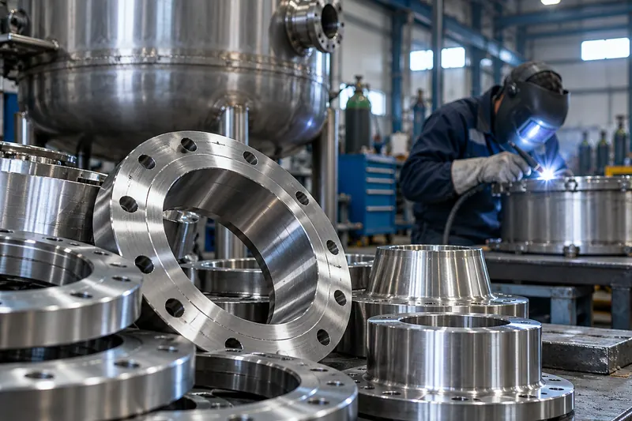
Paslanmaz kaynağı
Gıda, süt, kimya ve tesisat için tank, kazan, tezgâh ve kap imalatı.
Hizmet ayrıntıları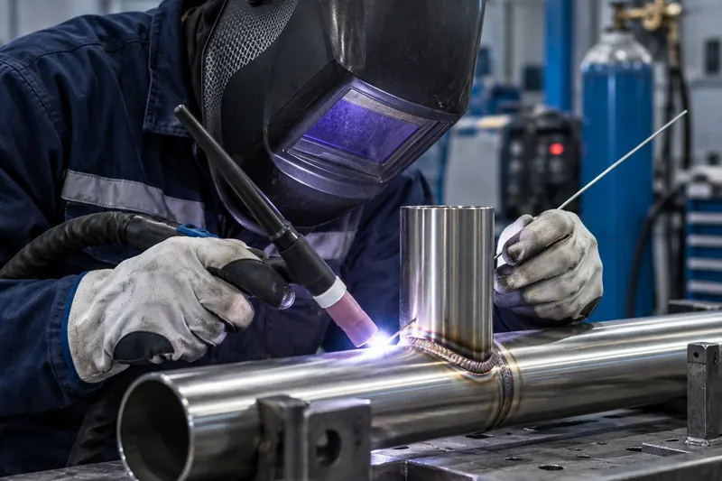
Argon (TIG) kaynağı
İnce sacda, alüminyumda ve paslanmazda temiz, gözeneksiz ve düzgün dikiş.
Hizmet ayrıntıları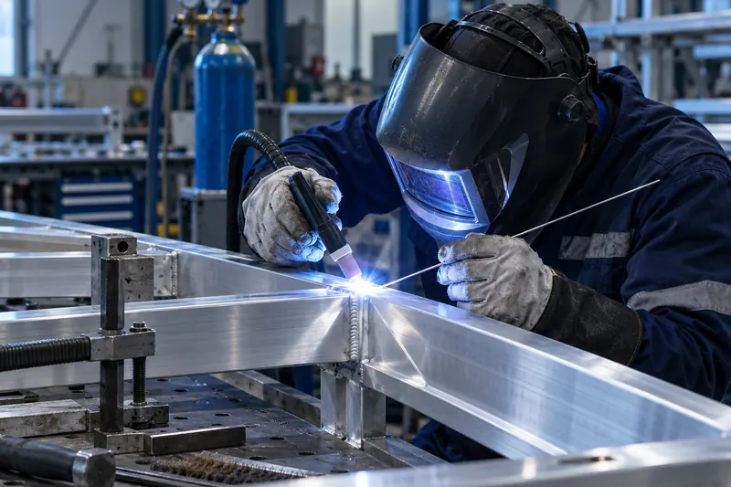
Alüminyum kaynağı
Alüminyum konstrüksiyon, hazne, şase ve onarım işleri.
Hizmet ayrıntıları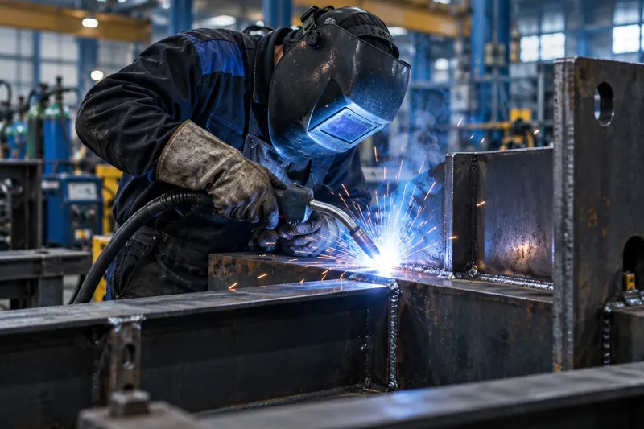
Gazaltı (MIG/MAG) kaynağı
Kalın kesitli çelikte hızlı ve dolgun kaynak; seri ve büyük hacimli imalat.
Hizmet ayrıntıları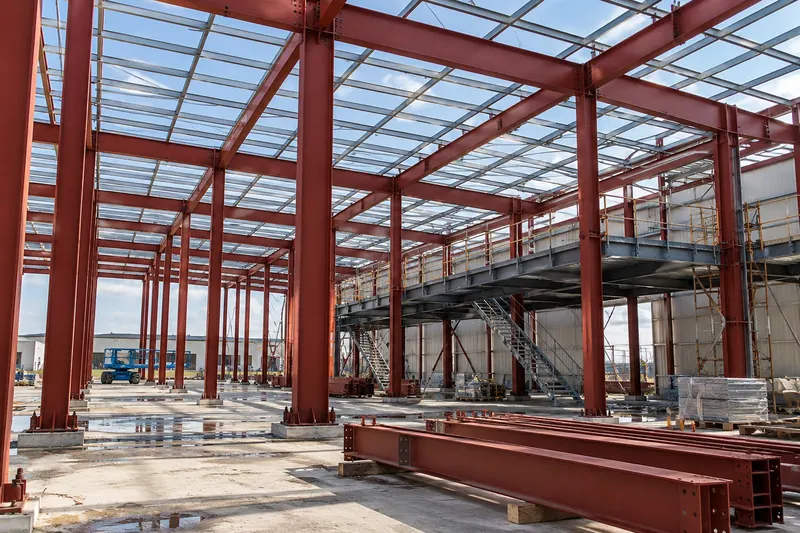
Çelik konstrüksiyon
İskelet, platform, sundurma, merdiven ve taşıyıcı sistemler; atölyede imalat, sahada montaj.
Hizmet ayrıntıları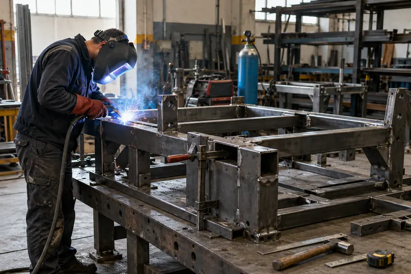
Makine imalatı
Çizimden veya numuneden makine gövdesi, şase ve özel ekipman imalatı.
Hizmet ayrıntıları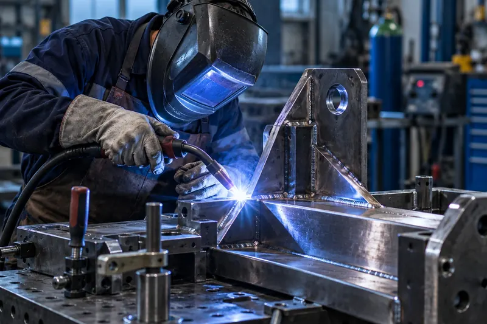
Kaynaklı özel imalat
Tek parçadan küçük seriye, ölçüye özel kaynaklı imalat.
Hizmet ayrıntıları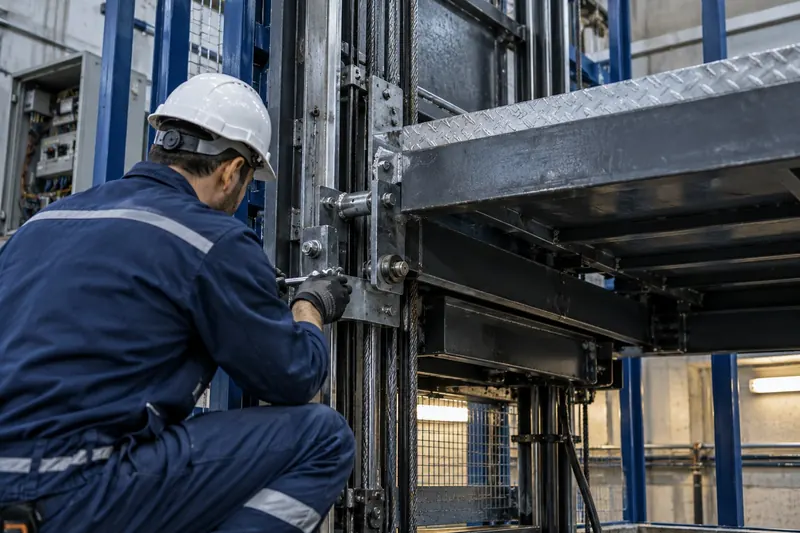
Yük asansörü tamiri
Yük asansörü kule, kabin ve taşıyıcı aksamında kaynaklı onarım; araç üstü yük asansörü tamiri.
Hizmet ayrıntılarıHangi sistemin uygun olduğundan emin değil misiniz?
Tesisinizin ölçüsünü ve kullanımını paylaşın; ihtiyacı birlikte netleştirelim ve keşif planlayalım.